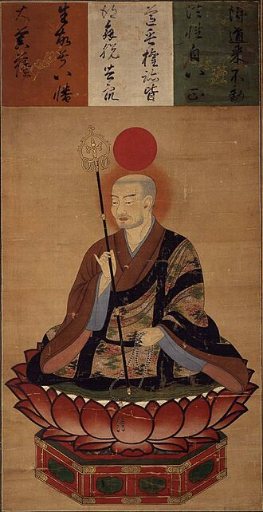
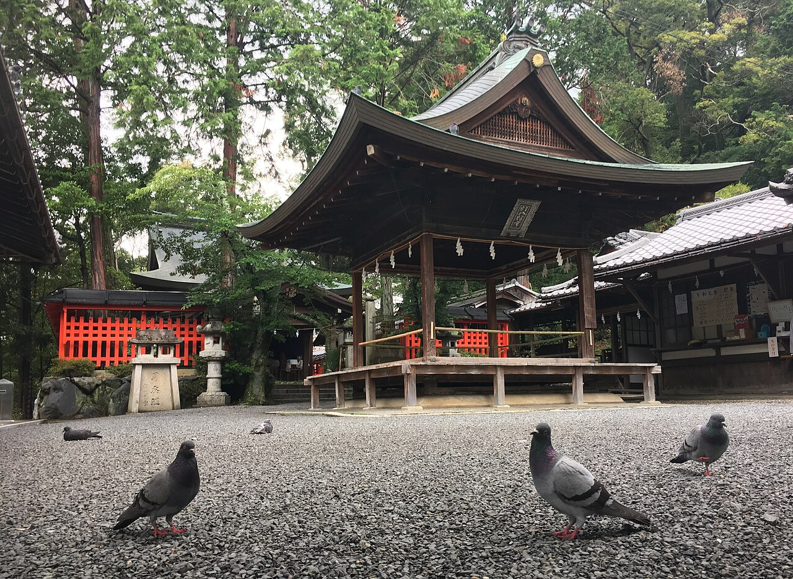

宇佐神宮
大分縣
全國八幡宮的總本宮，參拜時要拍手四次
看完整介紹 →被源氏武士奉為守護神的軍神，全國八幡宮的祭神

八幡神（はちまんしん）是八幡宮祭祀的神，被視為日本的軍神，自古被看作皇室的祖神，也是源氏武士的氏神，又稱「八幡大菩薩」[1]。從欽明天皇的時代開始，八幡神被視為應神天皇[1]。
八幡神通常以應神天皇為主神，左右配祀比賣神與神功皇后，三位合稱「八幡三神」；也有左右配祀仲哀天皇和玉依姬命的例子[1]。比賣神是誰有多種說法，可能是宗像三女神的市杵島姬命，近年也有人認為可能是卑彌呼或天照大神[1]。
平安時代以後，八幡神受到神佛習合的影響，成為佛教的護法神，因此有「八幡大菩薩」的稱號[1]。
源氏武士以八幡神為氏神。進入鎌倉時代，源賴朝擔任將軍、創設鎌倉幕府，八幡神也演變成武神與武家的守護神[1]。明治時代實施神佛分離，佛教式的「八幡大菩薩」神號被禁止[1]。
宇佐神宮是全日本八幡宮、八幡神社的總本社[1][2]。全國八幡宮的數量，各來源寫法不同：中文維基「八幡神」條目寫「4 萬餘座」[1]，宇佐神宮監製的官方資訊寫「四萬間以上，為神社中最多」[6]，「宇佐神宮」條目和旅遊網站寫「4 萬 4 千座」[2][3]，觀光廳寫「46000 多座，位居第一」[5]。各來源都同意數量在 4 萬座以上。
宇佐神宮、石清水八幡宮，再加上鶴岡八幡宮或筥崎宮，合稱「日本三大八幡」[1]。

八幡神的神使是鴿子（鳩），見 神使。相傳貞觀年間，宇佐八幡宮的神靈遷往男山（今石清水八幡宮）時，船的桅杆上出現一隻金色的鳩，被視為神靈現身的徵兆，從此鳩成為八幡大神的象徵[4]（僅單一旅遊網站資料）。
目前收錄 1 間，依地區排列
宇佐神宮
大分縣
全國八幡宮的總本宮，參拜時要拍手四次
看完整介紹 →